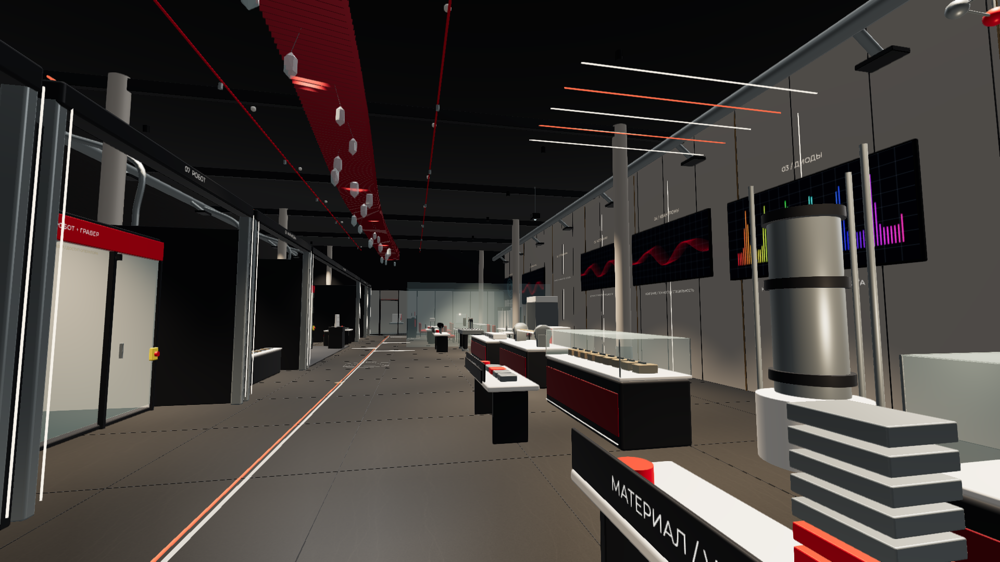
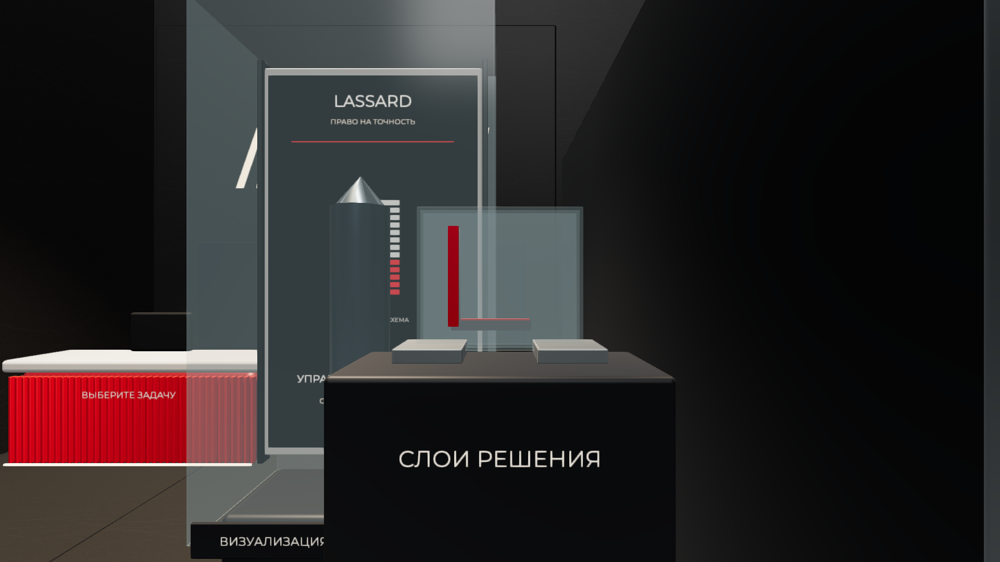

ЛАССАРД. Право на точность
Финальная идея
«Начинаем с детали вашего предприятия. Раскрываем технологии, людей и историю, которые стоят за результатом. Возвращаемся к вашему критерию приёмки и согласуем, что необходимо проверить перед покупкой».
В основе — «Право на точность» нашего проекта и приём «Обратный отсчёт детали» из доработки друга. Это один сюжет: результат → раскрытие причин → проверка → ваше решение. Директор сохраняет один вопрос на протяжении визита; команда показывает только релевантную ему технологическую ветвь.
Из совместных материалов сохранены открытые столы, понятные подписи на собственных носителях, проектор, рост за стеклом, движение механики станка, производственное окно и паспорт задачи. Из доработки друга взяты начало с готовой детали, объект из совмещаемых слоёв, раскрытие истории на уровне рук и выбор одной профильной машины вместо обязательного обхода всего каталога.

Потолок 7 метров: почему решение изменено
На этой высоте предлагаем работать общей формой, ритмом и светом. Основные исторические тексты и действия перенесены на уровень глаз и рук. Гостю не нужно постоянно поднимать голову, читать даты над станками или искать обязательную «правильную» точку.
Два конкурирующих потолочных слоя заменены одной композицией «Кристаллическая нить». Она находится над центральной общественной галереей, между рядами экспонатов и оборудования. Ориентировочный нижний уровень декоративных элементов — около +5 м, общий каркас — около +6,3 м при высоте помещения 7 м. Это координаты эскиза, а не утверждённые монтажные отметки.
Красный ритм ламелей сохраняет характер прежней волны, но становится спокойнее и компактнее. На том же общем каркасе расположены 24 полупрозрачных гранёных подвеса. Их связывает одна непрерывная световая линия. Все части принадлежат одной системе подвеса и одной композиции; отдельного «музея дат» над машинами больше нет.
Подвесы — художественная оптическая метафора структуры и света. Настоящие монокристаллы GaAs не прозрачные декоративные самоцветы. Реальный материал остаётся в отдельной защищённой кассете с точной подписью. Сходство арт-объекта с кристаллом не используется как техническая схема продукта.
Общий каркас и повторяемые элементы рассчитаны как принцип изготовимой статичной конструкции. В проект не заложены двигатели, левитация, дым или открытые промышленные лазерные лучи. Материал полупрозрачных элементов, масса, крепления, пожарные характеристики, доступ к инженерии и световой режим определяются рабочим проектом после обмера.
Сценарий визита директора: 35 минут
0–4 минуты. Одна деталь и один вопрос
Что показываем: безопасный подготовленный образец, а при согласованной подготовке — образец предприятия гостя. Есть место для рассмотрения под камерой.
Говорим: «Мы начнём с результата, ради которого вы выбираете оборудование. Какую операцию нужно выполнить и по какому критерию вы примете деталь?»
Действие гостя: рассматривает образец, называет главный вопрос: качество, повторяемость, производительность или внедрение. Менеджер записывает критерий его словами. Гость не должен угадывать, какая деталь «правильная».
Зачем это продаже: к дальнейшим экспонатам появляется конкретный вопрос. Если данных нет, используем подписанный отраслевой пример и отмечаем, что это ещё не испытание задачи заказчика.
4–10 минут. Вернуться к материалу
Что показываем: проекционную витрину. За стеклом постепенно проявляется увеличенный монокристалл; рядом — настоящий образец в кассете и подложка. В цифровой версии работает ускоренная анимация роста. В живом зале предусматривается оптическое проявление на физическом носителе, проверяемое натурным макетом.
Говорим: «За видимым результатом стоят управляемые условия. Здесь мы ускорили и увеличили процесс, чтобы показать принцип. Это визуализация; настоящий материал находится в отдельной кассете».
Действие гостя: запускает сцену кнопкой либо просит сопровождающего показать её. Сравнивает масштаб образца и учебного изображения. При желании замечает маленькое кольцо на столе — пасхалку «100 мм».
Зачем это продаже: появляется предметный разговор о материале и технологических ограничениях. Не утверждаем, что любой лазер компании изготовлен из одного GaAs-кристалла. Полупроводниковая, волоконная и твердотельная ветви раскрываются раздельно.
10–16 минут. Как компания приобрела эти возможности
Что показываем: короткую предметную шкалу истории и три прозрачных слоя. С фронтальной позиции слои складываются в букву L. Затем — ручной LED-позиционер, на котором можно совместить световое пятно с меткой.
Говорим: «Компания последовательно осваивала новые компетенции. Важно понять, какие из них работают на вашу задачу. Даже хороший компонент даёт нужный результат только в согласованной системе».
Историческая опора: начало в 2015 году; производство оборудования в 2017-м; сборка модулей в 2018-м; оптомеханика в 2019-м; выращивание полупроводников в 2021-м; площадка ОЭЗ “Технополис Москва” в 2023-м. Сопровождающий выбирает две-три релевантные вехи и архивные материалы. Предлагаемые реплики — авторский сценарий, не цитаты основателей.
Действие гостя: совмещает изображение либо регулирует учебную оптику. Для директора достаточно одного опыта; техническая команда может продолжить отдельно.
Зачем это продаже: определяем, какие вопросы настройки и конфигурации проверить. Учебный LED-опыт не доказывает точность промышленного станка.
16–25 минут. Станок отвечает действием
Что показываем: одну профильную машину, внешний пост выбора задания и образцы рядом. В прототипе двигаются портал и головка OPTIMUM; доступны обход контура, позиционирование и повтор траектории.
Говорим: «Выберите демонстрационное задание. Сейчас показываем движение механики без излучения. Качество обработки вашей детали проверим отдельно, по согласованным условиям».
Действие гостя: выбирает задание и запрашивает демонстрацию. В реальном зале оператор подтверждает готовность и запускает разрешённый штатный сухой цикл внутри закрытого контура. Посетитель не получает самостоятельного управления приводами.
После движения: гость рассматривает кромку и участвует в доступном измерении подготовленного образца. Инженер показывает происхождение образца, параметры и метод контроля. Если проведён тест материала клиента, обсуждают его протокол; иначе составляют программу испытания.
Если станок нельзя включить: заранее согласуют отдельный закрытый демонстрационный модуль и показ рабочего оборудования на подготовленной площадке. Учебный модуль не называют работающим промышленным станком. Обещание живой демонстрации подтверждается для конкретной машины до приглашения.
Зачем это продаже: снимаем вопросы эксплуатации, оснастки и наблюдения, затем возвращаемся к качеству. Сухое движение не доказывает производительность или качество резки.
25–35 минут. Производство и решение
Что показываем: доступный процесс за производственным окном, затем спокойный стол решения. Соседний участок не выдаётся за все производственные площадки LASSARD. Запись, если используется, подписывается как запись.
Говорим: «Мы раскрыли причины результата и способы его проверки. Теперь соберём вашу цепочку: задача, процесс, оборудование-кандидат, проверка и внедрение. Что ещё нужно подтвердить перед выбором?»
Действие гостя: вместе с инженером собирает паспорт задачи. На безопасном образце и его подставке появляется одна контрольная метка. В настоящем процессе номер образца должен соответствовать номеру протокола.
Результат визита: материал и операция; критерий приёмки; метод контроля; подтверждённое и неизвестное; образец/чертёж; ответственные; согласованный срок следующего действия. Предложение о поставке готовят по достаточным данным. Договор за один визит не обещается.
Закрывающая реплика: «Предлагаю испытать вашу деталь по этому критерию. Кто с вашей стороны согласует исходные данные и примет результат? Какой следующий шаг и дату фиксируем?»

Шесть пасхалок: когда и как раскрывать
1. Скрытое начало — 2015
Где: первые 15 тёплых акцентов потолочной нити и короткая шкала на столе истории. Когда: в разговоре о расширении компетенций. Реплика: «Небольшой код начала компании спрятан в первых элементах композиции: 15 отсылает к 2015 году». Считать ламели гостю не требуется; история остаётся понятной без разгадки.
2. Сто миллиметров
Где: маленькое металлическое кольцо на столе зоны материала. В модели его диаметр — 100 мм. Когда: после увеличенной проекции роста. Реплика: «Теперь вернёмся к настоящему масштабу: в карточке LASSARD указан такой номинальный диаметр монокристалла GaAs». Это размер конкретного представленного направления, а не характеристика всех кристаллов или станков.
3. Скрытое L
Где: три прозрачных слоя у входного объекта. С фронтальной точки собирается буква L. Когда: при переходе от отдельных компетенций к согласованному решению. Реплика: «По отдельности это фрагменты. При согласовании появляется целый образ». Связь с названием LASSARD — дополнительное открытие. Слои не изображают устройство лазера.
4. Непрерывная нить
Где: спокойная световая линия общего потолочного каркаса. Когда: если гость интересуется компонентами или волоконным направлением. Реплика: «Эта линия связывает пространство и напоминает о волоконной ветви компании». Это обычная светодиодная подсветка; настоящий лазерный луч по залу не проходит.
5. Одна контрольная метка
Где: образец и его подставка у финального стола. Когда: в завершении визита. Реплика: «Мы вернулись к той самой детали и тому же критерию. Теперь видно, какие доказательства относятся именно к ней». В живом процессе эту связь закрепляют идентификаторы образца и протокола, а не декоративная отметка сама по себе.
6. Грани под ногами
Где: редкие линии почти в тон пола, вблизи сцены материала и дальше по маршруту. Когда: как необязательное наблюдение при переходе. Реплика: «Геометрия под ногами продолжает тему структуры, а дальше становится спокойнее». Это декоративная метафора; рисунок не является диаграммой решётки GaAs, эвакуационной разметкой или обязательным маршрутом.
Правило сопровождающего: для делового визита раскрывать две-три пасхалки по интересу гостя. Они поддерживают разговор и запоминаемость. Поиск всех шести не является условием прохождения и не должен съедать время технической беседы.
Почему предметы расположены именно так
У входа лежит результат и формулируется вопрос. За ним находятся материал, история и доступные учебные действия. Столы обращены к публичному проходу; посетителю не нужно тянуться через границу станка. Выбранное оборудование соседствует с образцами и оснасткой. Производственное окно даёт предметное подтверждение работе людей. Стол решения находится после опыта в спокойной части, отдельно от мастерской.
Сюжет возвращается к причинам результата, но физическое движение идёт последовательно вперёд. Не нужно водить делегацию зигзагом по всей экспозиции. Основная галерея остаётся открытой; посетительских лент нет. Рабочие корпуса и установленный владельцем режим оборудования сохраняются.
Другие аудитории в одном интерьере
Партнёр / интегратор, около 30–40 минут: собственный вопрос об интеграции → релевантная компонентная ветвь → интерфейсы и согласование → пример оборудования → производство → границы ответственности и совместное ТЗ. Пасхалки «Скрытое L» и «Нить» поддерживают обсуждение связей; итог — комплект вопросов и документов для инженерной встречи.
Учебная группа, около 35–45 минут: вопрос о получении результата → визуализация и сравнение масштабов → безопасная оптика и слои → симулятор в классе → наблюдение производства → объяснение своего результата. Итог — выполненная учебная задача. Самостоятельного доступа к приводам и производственным лазерам нет.
Власть / институты развития, около 20–30 минут: проверяемая история и география → две компетенции → один конкретный продукт → кадры и доступное производство → предмет дальнейшей работы. Общий процент локализации не заменяет подтверждение конкретного изделия. Итог — вопросы развития и ответственные.
Длительности — сценарные ориентиры для репетиции, не измеренные показатели посещения. Главный подробный сценарий и интерактив ориентированы на директора-заказчика.
Как пригласить директора крупного предприятия
Рабочее предложение — индивидуальная инженерная сессия вокруг его задачи, с понятной длительностью и результатом. Приглашаем по релевантности операции и полномочиям, а не по состоянию человека. Руководитель может прийти вместе с техническим владельцем задачи; инженеры при необходимости остаются дольше.
[Имя Отчество], приглашаем Вас и технического руководителя на индивидуальную сессию в LASSARD по задаче [операция / материал / ограничение]. За 35 минут разберём путь от компонентов и настройки до результата на детали, согласуем критерии приёмки и необходимые испытания. Если Ваши исходные данные позволяют подготовить тест заранее, отдельно согласуем его условия. На выходе будет понятен следующий технический шаг и ответственные. С кем из Ваших коллег удобнее согласовать подготовку?
Предпочтительный путь контакта: предметное приглашение от руководителя или коммерческой команды LASSARD, рекомендация действующего клиента, интегратора или отраслевого партнёра. До встречи проверить наличие подходящего образца, инженера и разрешённого режима демонстрации. Готовые письма и приглашения из проекта не отправлялись.
Речь команды на защите: примерно две минуты
«Наша концепция называется “Право на точность”. Мы начинаем с детали и вопроса директора: какой результат нужен его предприятию и чем он будет подтверждён?
Затем раскрываем скрытую работу за результатом. В стеклянной витрине через проекцию проявляется увеличенный кристалл. Настоящий материал представлен отдельно. Далее история LASSARD объясняет, как компания наращивала свои компетенции — оборудование, модули, оптомеханику, полупроводники и производственные площадки.
Директор действует сам: совмещает слои, пробует учебную настройку и выбирает демонстрационное задание у станка. Механика отвечает движением в разрешённом сухом цикле. После этого разговор возвращается к образцу и критерию контроля. Для собственной детали согласуется настоящее испытание.
Мы пересобрали потолок. При высоте 7 метров он работает общей композицией, а не длинными текстами. Одна кристаллическая нить находится над общей галереей и содержит спокойные отсылки к свету, структуре и истории компании. Основная история остаётся на уровне глаз. Пасхалки раскрываются по ходу разговора и не превращают визит в обязательный квест.
В финале заказчик видит реальный производственный процесс и вместе с инженером собирает паспорт своей задачи: критерий, условия проверки, ответственные и следующий шаг. Поэтому каждая остановка имеет деловую функцию. Мы предлагаем измерять результат по согласованным испытаниям, техническим предложениям и дальнейшим договорам».
Состав готовности и источники
Финальный продукт — согласованный по содержанию концепт, интерактивная браузерная модель, редактируемые геометрия и сцена, сценарий, рендеры и проверка. Это не рабочий строительный проект и не утверждённая программа промышленного оборудования. Контур 36 × 17,389 м и координаты колонн условны; в кейсе подтверждены 626 м² и высота 7 м.
Проекция, движение и измерение — разные виды демонстрации. Анимация роста обозначает оптический эффект; реальное выращивание GaAs в открытом шоуруме не предлагается. Режимы обработки и сухого цикла подтверждает инженер для выбранной машины. Стоимость новой композиции не взята из старой сметы v07.
История и площадки: официальная страница LASSARD. GaAs и номинальный диаметр 100 мм: карточка производителя. Демонстрация на материалах заказчика: LASSARD, демонстрация оборудования.
Основа объединения: наша рабочая v09 и пакет друга «ЛАССАРД_Концепции_сценарии_и_задание_3D». Из текста друга использованы сценарные идеи; его непроверенные изменения геометрии не подставлялись вместо рабочей сцены.